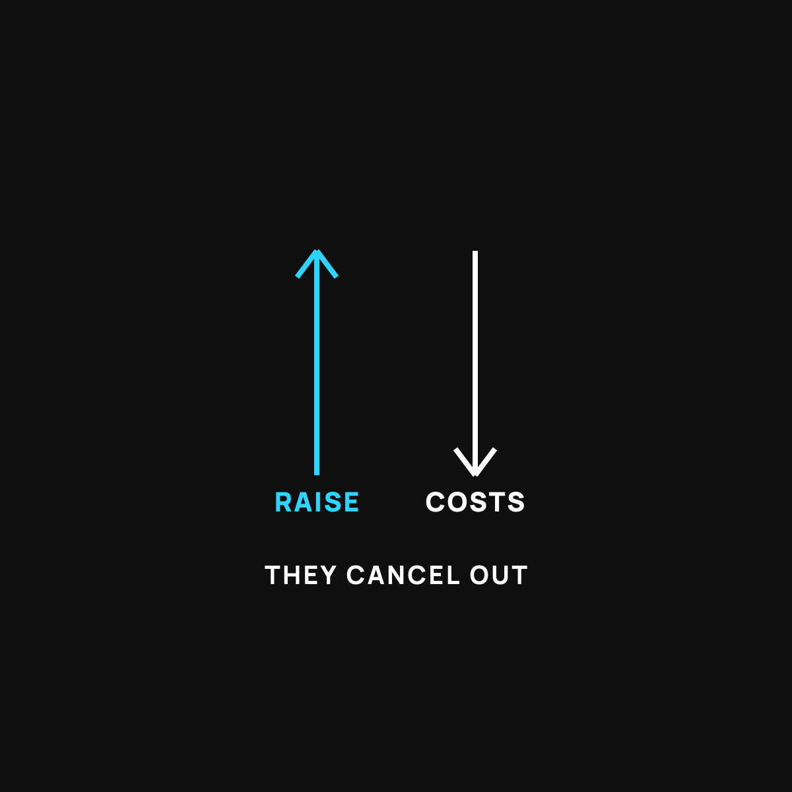

Where Your Raise Actually Went
You got a raise and don't feel richer. You're not crazy. It landed on a moving staircase.
Your raise landed on a down escalator. Taxes took the first bite before it hit your account, your spending quietly grew to match it, and prices rose under you at the same time. To keep the next one, give it a job before it arrives: send half straight to savings automatically, the day it starts.

You got a raise. You were happy. And then a few months later you looked around and thought, wait, where did it go? I don't feel any richer.
You're not imagining it, and you're not bad with money. Your raise was real. It just landed on a moving staircase.
The down escalator
Picture walking up an escalator that's going down. You're stepping up the whole time, working hard, and yet you barely move. Take a break and you actually slide backward.
That's what a raise walks into. You climb, but three things are quietly pushing the stairs down under your feet. Let's name them, because once you can see them, you can beat them.
Push 1: taxes take the first bite
The number your boss says out loud isn't the number that hits your account. A raise gets taxed, so you keep less of it than the headline suggests. A "five thousand dollar raise" might feel more like three-something once it actually lands. Not a scam, just how it works. But it means the raise was smaller than it sounded from day one.
Push 2: your spending quietly grew
This is the sneaky one. When more money comes in, life tends to fill the space. A slightly nicer version of things, a few more yeses, an upgrade here and there. None of it feels reckless. But your spending crept up to match the raise, almost on its own. (I wrote about this exact trap in Why You Feel Broke on a Good Income.)
Push 3: prices rose too
While you were earning more, the price of everyday stuff crept up as well. So even the money you kept buys a little less than it used to. The staircase moves under everyone, not just you. (That slow shrinking of a dollar is really about how money is made, which I covered here.)
How to actually keep your next raise
Here's the good news. You can beat a down escalator. You just have to move faster than it, on purpose.
The trick is to give your raise a job before it ever arrives. The moment a raise kicks in, send a piece of it, even just half, straight into savings automatically, before it ever touches your spending. You never see it, so your lifestyle never grows to swallow it.
That's the whole move. A raise you never see is a raise the escalator can't eat.
The takeaway
Your raise didn't vanish. Taxes trimmed it, your spending grew to match it, and prices nudged up under it, all at once, like an escalator running down while you climb. Give the next one a job before it lands, and you finally start moving up for real.
Questions I get about this
How much of a raise do I actually keep after taxes?
Less than the headline number. A "$5,000 raise" often feels more like three-something once taxes come out before it lands. That's not a scam, just how it works, but it means the raise was smaller than it sounded from day one.
What should I do with a raise?
Decide before it arrives. The day the raise kicks in, set an automatic transfer of part of it, even half, straight into savings. You never see it, so your lifestyle never grows to swallow it. A raise you never see is a raise the escalator can't eat.
Why do prices go up right when I earn more?
They're going up for everyone all the time. The staircase moves under everybody, not just you. Rising prices mean the money you keep buys a little less, which is the dollar's slow leak measured in your grocery cart.
New here?
Normaltown USA is plain-English money and healthcare help for normal people, written by a regular guy with a family of four. No jargon, no hype. Start here, or read the FAQ.